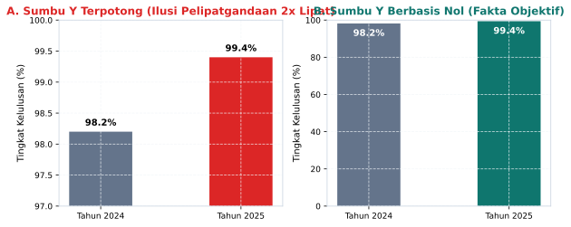
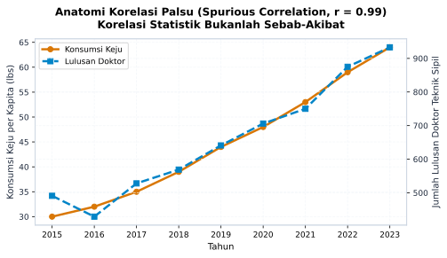
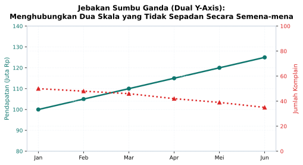

2 Anatomi Manipulasi Visual
“Mata manusia dirancang oleh Sang Pencipta untuk mengagumi keindahan bentuk dan keserasian warna. Namun, ketika keindahan visual itu disalahgunakan untuk menyembunyikan cacat pada data, mata kita dengan mudah menjadi pintu masuk bagi kebohongan yang paling meyakinkan.”
2.1 Pesona Visual dan Celah Persepsi
Setiap awal pekan di sebuah sekolah menengah di Jawa Timur, papan pengumuman kayu di depan lobi utama selalu dikerumuni oleh para siswa dan guru. Papan itu memuat buletin mingguan yang dikelola oleh tim redaksi siswa. Di samping rubrik karya sastra dan artikel wawasan, ada satu pojok yang paling sering memicu perdebatan seru: pojok infografis evaluasi kelas.
Minggu ini, redaksi mading menampilkan sebuah grafik batang berwarna biru terang yang memetakan skor kebersihan antarkelas di lantai dua. Di grafik tersebut, batang milik Kelas A tampak menjulang tinggi menyentuh garis atas bingkai, sementara batang milik Kelas B tampak kerdil, tingginya tidak sampai separuh dari Kelas A.
Melihat pemandangan visual itu, perwakilan murid Kelas B langsung merasa tertunduk malu, sementara murid Kelas A bersorak bangga. Namun, ketika seorang guru pembina menghampiri papan mading dan membaca angka-angka kecil yang tertera di puncak masing-masing batang, beliau tersenyum lalu menggelengkan kepala.
“Mengapa kalian bersedih?” tanya sang guru kepada perwakilan Kelas B.
“Nilai kebersihan kami hancur lebur, Bu. Lihat saja grafiknya, kelas kami ketinggalan jauh sekali di dasar.”
“Kalian melihat gambar, tetapi belum membaca angka,” jawab sang guru tenang. “Kelas A memperoleh nilai sembilan puluh delapan koma lima, sedangkan kelas kalian memperoleh nilai sembilan puluh tujuh. Selisihnya hanya satu koma lima poin dari skala seratus. Kedua kelas sama-sama bersih dan sangat terawat. Gambar ini tampak timpang karena redaksi mading memotong garis bawah grafik dan memulainya dari angka sembilan puluh enam.”
Peristiwa di depan papan mading sekolah itu adalah miniatur dari apa yang terjadi setiap hari di panggung dunia modern. Manusia adalah makhluk visual. Secara evolusioner dan biologis, korteks visual di otak kita memproses luas bidang, panjang garis, kontras warna, dan kemiringan sudut jauh lebih cepat daripada memproses deretan simbol angka atau teks narasi. Ketika kita melihat sebuah bentuk geometris yang menjulang, otak bawah sadar kita secara otomatis menarik kesimpulan: “Ini besar, ini unggul, ini menang!”.
Para perancang infografis media, konsultan pemasaran politik, dan pembuat laporan keuangan korporat memahami betul celah kognitif ini. Mereka menyadari bahwa sebagian besar pembaca tidak memiliki waktu atau ketelitian untuk memeriksa label sumbu koordinat. Akibatnya, grafik tidak lagi difungsikan sebagai jendela kejujuran untuk melihat realitas apa adanya, melainkan diubah menjadi panggung sandiwara visual untuk menggiring opini publik (Huff 1954; Cairo 2019).
Di era media sosial yang digerakkan oleh algoritma rekomendasi umpan-klik (clickbait algorithms), distorsi visual ini mengalami amplifikasi yang luar biasa. Sebuah grafik yang dramatis, kontroversial, atau memicu kemarahan publik akan dibagikan puluhan ribu kali dalam hitungan menit, terlepas dari apakah grafik tersebut jujur atau culas. Untuk membentengi akal sehat kita, kita perlu membedah secara mendalam enam taksonomi manipulasi visual yang paling sering mengecoh nalar masyarakat.
2.2 Enam Taksonomi Manipulasi Grafik
2.2.1 Pemotongan Sumbu Vertikal (Truncated Y-Axis)
Bentuk manipulasi paling klasik, paling sederhana, namun paling mematikan dalam sejarah visualisasi data adalah pemotongan sumbu vertikal (\(y_{\min} \neq 0\)). Diagram batang (bar chart) bekerja berdasarkan prinsip proporsionalitas luas bidang: mata kita menilai besaran kuantitas data berdasarkan tinggi batang relatif terhadap garis dasar (baseline).
Ketika pembuat grafik memotong sumbu vertikal dan memulai skala dari angka yang mendekati nilai data terendah, proporsi visual batang hancur total.

Perhatikan perbandingan pada Figure 2.1. Pada Panel A, sumbu tegak dimulai dari angka 97% hingga 100%. Peningkatan tingkat kelulusan siswa dari \(98{,}2\%\) ke \(99{,}4\%\) disajikan secara hiperbolis: batang tahun kedua tampak dua kali lebih tinggi dibandingkan tahun pertama, menciptakan ilusi pelipatgandaan tinggi visual (+100%) atas selisih absolut yang hanya \(1{,}2\%\).
Namun, ketika sumbu tegak dikembalikan ke titik nol objektif sebagaimana tampak pada Panel B, mata kita segera menangkap kenyataan yang sesungguhnya: tingkat kelulusan siswa pada kedua tahun tersebut sejatinya sudah berada di puncak performa yang luar biasa stabil. Selisih \(1{,}2\%\) adalah peningkatan wajar yang tidak selayaknya digambarkan laksana ledakan spektakuler. Memotong sumbu pada diagram batang adalah pelanggaran berat terhadap etika geometri data, karena diagram batang mewajibkan keterikatan mutlak antara panjang fisik batang dengan rasio nilai aslinya.
Perlu satu nuansa agar kaidah ini tidak menjadi overgeneralisasi. Ketegasan titik nol di atas berlaku untuk diagram batang dan lingkaran yang dibaca lewat panjang atau luas. Untuk diagram garis deret waktu, panduan praktik visualisasi data dan literatur visualisasi (Cairo 2019; Tufte 1983) sepakat pada posisi kontekstual: memperbesar rentang sumbu garis untuk suhu global, harga saham harian, atau suhu turbin sekitar 900 Kelvin adalah sah selama sumbu diberi label jujur, diskala linear konsisten, dan anotasi menjelaskan pembesaran. Yang tetap dilarang adalah menyembunyikan pemotongan, mencampur dua satuan tak sepadan, atau memakai pembesaran untuk memanaskan emosi. Kaidahnya: batang dan pai wajib nol, garis boleh zoom dengan pengungkapan penuh.
2.2.2 Distorsi Perspektif Tiga Dimensi (3D Perspective Distortion)
Di ruang rapat kantor modern maupun selebaran promosi lembaga bimbingan belajar, kita kerap menjumpai diagram lingkaran (pie chart) dan diagram batang yang dihias dengan efek tiga dimensi (3D). Banyak orang mengira bahwa penambahan bayangan dan kemiringan sudut adalah upaya artistik untuk mempercantik laporan. Faktanya, dalam kaidah visualisasi data, efek 3D tanpa fungsi spasial riil adalah racun persepsi (Tufte 1983).
Ketika sebuah diagram lingkaran dimiringkan secara perspektif, hukum optik proyektif mulai mendistorsi kebenaran. Potongan lingkaran yang berada di bagian depan bawah akan menempati piksel visual yang jauh lebih luas dibandingkan potongan lingkaran yang berada di bagian belakang atas, meskipun nilai persentase numerik potongan belakang jauh lebih besar.
Sebagai contoh, sebuah potongan data yang hanya bernilai 20% dapat tampak jauh lebih dominan dan perkasa daripada potongan data bernilai 35% hanya karena potongan 20% diletakkan di bagian depan dengan sudut kemiringan tajam. Di mata pembaca yang membaca sepintas, potongan depan itulah yang dianggap sebagai suara mayoritas. Menambahkan dimensi semu pada data datar dua dimensi adalah trik manipulasi yang mengeksploitasi keterbatasan sudut pandang manusia.
2.2.3 Skala Non-Linear yang Menyesatkan (Non-Linear and Inconsistent Scaling)
Sumbu koordinat adalah timbangan sebuah grafik. Timbangan yang adil mensyaratkan jarak fisik yang seragam untuk mewakili kenaikan nilai yang setara. Pada sumbu linear, jarak antara angka 10 ke 20 harus sama persis dengan jarak antara angka 20 ke 30.
Manipulasi terjadi ketika pembuat grafik mempermainkan interval sumbu secara sembunyi-sembunyi. Sebagai contoh, pada sumbu horizontal yang memetakan waktu, jarak antara tahun 2010 ke 2015 digambar sepanjang dua sentimeter, tetapi jarak antara tahun 2015 ke 2024 (sembilan tahun) juga digambar sepanjang dua sentimeter tanpa penandaan khusus.
Dengan cara ini, laju pertumbuhan utang atau perlambatan ekonomi yang sejatinya melandai dapat ditarik menjadi garis lurus yang tampak menanjak curam, atau sebaliknya. Ketika skala sumbu tidak konsisten, grafik kehilangan integritas geometrisnya dan berubah menjadi karikatur data.
2.2.4 Pemilihan Rentang Waktu Terpilih (Cherry-Picking Time Intervals)
Data deret waktu (time-series) adalah sasaran empuk bagi mereka yang ingin mengarang cerita sepihak. Sebuah fenomena ekonomi, suhu iklim, atau performa kepengurusan organisasi selalu mengalami fluktuasi siklikal: ada masa naik, ada masa turun, dan ada masa tenang.
Trik cherry-picking dilakukan dengan cara memotong jendela waktu pengamatan secara sangat selektif. Bayangkan sebuah lembaga filantropi yang selama sepuluh tahun terakhir mengalami penurunan penerimaan donasi secara berkesinambungan. Namun, pada bulan Ramadan tahun lalu, penerimaan donasi kebetulan melonjak sesaat karena adanya program darurat bencana.
Jika pengurus yayasan ingin menampilkan citra keberhasilan semu kepada para donatur, mereka cukup memotong rentang waktu grafik: mereka membuang data sembilan tahun sebelumnya, dan hanya menampilkan grafik dari bulan Syaban hingga bulan Syawal tahun lalu. Garis grafik akan tampak melesat ke langit, memberi kesan bahwa yayasan sedang berada dalam masa keemasan, padahal tren makro jangka panjangnya sedang berada di ambang kebangkrutan. Menilai tren tanpa melihat horizon waktu yang komprehensif adalah kekeliruan fatal yang kerap memicu salah langkah dalam pengambilan keputusan.
2.2.5 Jebakan Korelasi Palsu (Spurious Correlations)
Di era komputasi modern, membandingkan ribuan deret data acak menggunakan perangkat lunak statistik sangatlah mudah. Jika kita memasukkan ratusan variabel acak ke dalam komputer, hukum peluang memastikan bahwa kita akan menemukan beberapa pasang variabel yang memiliki koefisien korelasi linear (\(r\)) sangat tinggi mendekati satu, murni karena faktor kebetulan matematis semata.
Secara matematis, koefisien korelasi Pearson dirumuskan sebagai:
\[r = \frac{\sum_{i=1}^{n} (x_i - \bar{x})(y_i - \bar{y})}{\sqrt{\sum_{i=1}^{n} (x_i - \bar{x})^2 \cdot \sum_{i=1}^{n} (y_i - \bar{y})^2}}\]
Formula di atas murni mengukur sejauh mana dua variabel bergerak bersama dalam pola garis lurus. Jika nilai \(x\) naik saat \(y\) naik, maka nilai \(r\) akan positif mendekati satu. Namun, formula matematika ini sama sekali tidak memiliki kemampuan untuk membedakan apakah kenaikan \(x\) memang menjadi penyebab (illat) bagi kenaikan \(y\), ataukah keduanya hanyalah dua peristiwa terpisah yang kebetulan beriringan.

Perhatikan Figure 2.2 yang mengadaptasi fenomena korelasi palsu terkenal (data ilustratif yang disintesis menyerupai pola Tyler Vigen (Vigen 2015)). Kurva tingkat konsumsi keju per kapita bergerak beriringan secara sangat harmonis dengan kurva jumlah lulusan doktor teknik sipil (\(r = 0{,}99\), terhitung dari data yang diplot). Apakah ini berarti makan keju membuat seseorang menjadi ahli struktur jembatan? Ataukah belajar teknik sipil memicu kecanduan keju?
Tentu saja tidak. Keduanya sama sekali tidak memiliki hubungan sebab-akibat (causality). Dalam tradisi filsafat Islam dan kaidah ushul fikih, para ulama membedakan secara tegas antara hubungan penyertaan kebiasaan (iqtiran) dengan hubungan sebab-akibat hakiki (sababiyyah). Hanya karena dua peristiwa terjadi bersamaan secara berulang, akal sehat kita tidak boleh secara serampangan menetapkan bahwa peristiwa pertama adalah penyebab bagi peristiwa kedua tanpa adanya bukti mekanisme kausalitas yang nyata dan rasional.
Namun, di media massa, panggung seminar, dan lini masa media sosial, grafik semacam ini kerap dipamerkan untuk membenarkan teori-teori tak masuk akal. Seseorang bisa saja menghubungkan grafik peningkatan pengguna gawai pintar di sebuah kota dengan grafik penurunan angka kehadiran salat berjamaah di masjid, lalu menyimpulkan secara tergesa-gesa bahwa layar ponsel secara langsung merusak keimanan warga, tanpa meneliti variabel lain seperti perubahan jam kerja buruh atau pergeseran demografi permukiman. Mengacaukan korelasi dengan kausalitas adalah salah satu bentuk kebutaan nalar yang paling berbahaya di era banjir data.
2.2.6 Jebakan Sumbu Ganda (Misleading Dual Y-Axes)
Teknik manipulasi yang paling canggih dan sering lolos dari pengawasan para profesional di ruang rapat kantor adalah penggunaan sumbu ganda (dual Y-axes). Grafik sumbu ganda menempatkan dua variabel dengan satuan berbeda pada satu bidang gambar yang sama: sumbu Y sebelah kiri untuk variabel pertama (misalnya pendapatan dalam miliar rupiah), dan sumbu Y sebelah kanan untuk variabel kedua (misalnya jumlah keluhan pelanggan dalam satuan orang).

Sebagaimana tampak pada Figure 2.3, bahaya utama dari sumbu ganda terletak pada kebebasan mutlak pembuat grafik dalam mengatur rentang skala kedua sumbu tersebut. Pembuat grafik dapat memperlebar skala sumbu kiri dan mempersempit skala sumbu kanan sesuka hati hingga kedua garis kurva saling bersilangan (crossing point) tepat di bulan tertentu.
Persilangan visual ini memicu ilusi kognitif yang sangat kuat: pembaca akan mengira bahwa ada peristiwa luar biasa yang terjadi di titik persilangan tersebut, di mana pendapatan melampaui keluhan, padahal titik potong itu adalah ilusi optik fiktif yang tercipta semata-mata karena pilihan pengaturan skala desainer. Dua variabel dengan satuan ukuran yang berbeda tidak memiliki titik temu fisik di alam nyata. Menggunakan grafik sumbu ganda untuk membuktikan korelasi erat adalah tindakan yang sangat tidak dianjurkan dalam standar visualisasi data ilmiah terkini.
2.3 Menegakkan Timbangan di Era Kecerdasan Buatan
Setelah kita membedah enam anatomi manipulasi visual di atas, sebuah pertanyaan mendasar muncul: mengapa praktik manipulasi ini terus bertahan dan bahkan semakin merajalela di era kecerdasan buatan saat ini?
Jawabannya berkaitan erat dengan perubahan lanskap produksi konten digital. Di masa lalu, membuat grafik manipulatif membutuhkan usaha manual yang disengaja. Di era Generative AI saat ini, ribuan grafik dapat diproduksi secara otomatis oleh agen kecerdasan buatan hanya dengan satu perintah teks sederhana.
Sistem kecerdasan buatan dilatih untuk mematuhi preferensi pengguna. Jika seorang pengguna meminta AI: “Buatkan grafik yang memperlihatkan bahwa program kerja saya berhasil gemilang tahun ini”, sistem AI tanpa beban moral akan secara otomatis memilihkan rentang waktu terbaik, memotong sumbu Y ke batas terendah, dan memilih representasi visual yang paling dramatis. Mesin tidak memiliki nurani; mesin hanya mengeksekusi optimasi prompt.
Bagi para calon pemimpin, pendidik, dan profesional di berbagai sektor, penguasaan terhadap anatomi manipulasi visual ini adalah benteng pertahanan moral. Keterampilan ini selaras dengan ajaran fundamental dalam Al-Quran mengenai etika keadilan timbangan:
“Kecelakaan besarlah bagi orang-orang yang curang (dalam menakar dan menimbang)! Yaitu orang-orang yang apabila menerima takaran dari orang lain mereka minta dipenuhi, dan apabila mereka menakar atau menimbang (untuk orang lain), mereka mengurangi.” (QS. Al-Muthaffifin: 1-3)
Para ulama tafsir menjelaskan bahwa ayat ini tidak hanya berlaku bagi pedagang gandum atau minyak di pasar tradisional yang mempermainkan batu timbangan fisik. Ayat ini berlaku umum bagi setiap bentuk timbangan dan takaran dalam kehidupan manusia, termasuk timbangan informasi dan neraca representasi data.
Dalam konteks tata kelola organisasi, yayasan kemanusiaan, lembaga nirlaba, dan institusi publik, penyajian grafik yang jujur adalah pilar utama akuntabilitas publik. Jika sebuah lembaga pengelola dana sosial memotong sumbu grafik pertumbuhan aset atau program pemberdayaan agar tampak melonjak ratusan persen demi menarik simpati donatur, tindakan tersebut hakikatnya adalah penipuan visual yang mencederai amanah. Demikian pula dalam laporan evaluasi program sekolah atau perusahaan: jika grafik capaian disajikan dengan sumbu ganda yang dimanipulasi agar kurva prestasi tampak melompat tinggi melampaui kurva biaya operasional, hal itu merusak martabat kejujuran intelektual.
Memotong sumbu vertikal grafik untuk membesar-besarkan prestasi pribadi, menyembunyikan rentang waktu penurunan untuk menipu publik, atau mempermainkan skala sumbu ganda untuk menjatuhkan pihak lain pada hakikatnya adalah perbuatan mengurangi timbangan kebenaran. Menegakkan kejujuran grafik adalah bagian integral dari memegang amanah keilmuan (Amanah Ilmiyyah).
Ketika generasi muda terjun ke masyarakat, baik sebagai pendidik, pengurus yayasan, manajer bisnis, maupun pengambil kebijakan publik di instansi pemerintahan, mereka harus menjadi pelopor transparansi data. Mereka tidak boleh silau oleh visual yang gemerlap, tidak boleh gentar mengkritisi grafik yang tampak canggih, dan selalu memegang teguh prinsip bahwa kebenaran fakta harus disampaikan secara adil, proporsional, dan apa adanya. Kejujuran di atas selembar grafik adalah cermin dari ketakwaan dan integritas di dalam dada.